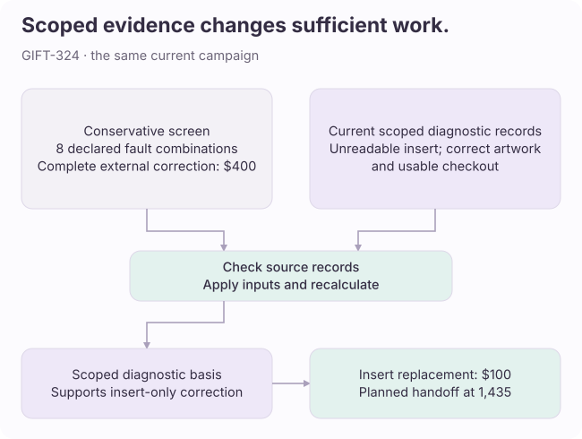
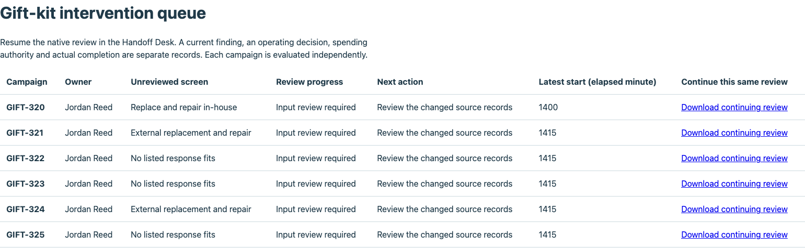

Leah is accountable for 120 usable gift kits per campaign, a $600 correction limit and a handoff at the end of the day. Marketing needs recipients to scan the printed code, reach the right destination and complete checkout. Finance expects a reason for correction spending. Production needs time, permission and a workable package of tasks.
Several campaigns now need attention. One still has ample time for a $300 in-house correction. Another has reached the last half hour of its one-day window, when the faster $400 external package can make a difference. An incomplete booking or an unsupported diagnosis could make either proposal unsafe to put forward.
Jordan Reed owns these fictional cases. Leah needs a queue that tells them what to review next, with the supporting case attached. A list of calculated winners would leave the supporting facts, operating choice and actual handoff unexplained.
Similar campaigns need different interventions.
Shared basis. 120 usable kits by minute 1,440; a $600 limit; faults in both the printed code and destination. The same v3 app prefers lower expense among complete corrections that meet every requirement. Both scenarios plan ten minutes of fresh rehearsal.
What changes. Compare two campaigns with their own scoped diagnostic and booking records. Review begins at minute 0 in one and 1,410 in the other. Candidate starts follow that clock; the cutoff, quotes, capacity and recorded validity intervals stay fixed.
Ample window · GIFT-320
$300 in-house correction is preferred.
- Review time
- Minute 0: a full day remains
- Complete sequences
- In-house: 40 minutes; external: 25
- Supporting records
- Current campaign and insert-4 booking

Leah can put forward the cheaper complete correction. Both packages meet the deadline, so finance has no deadline-based reason to pay the extra $100.
Thirty minutes remain · GIFT-321
$400 external correction is preferred.
- Review time
- Minute 1,410 of 1,440
- Complete sequences
- In-house finishes 1,450; external 1,435
- Supporting records
- Current campaign and insert-4 booking

Leah can justify the $100 premium because the cheaper complete response misses the original cutoff. The external package still needs a genuine current booking.
What this means for the decision. The priority stays cost first. The available time determines whether the $300 package meets the promise and whether paying $400 protects it. Choosing and authorizing that work remain separate human actions.
The two views show reviewed outcomes from matched operating scenarios. Their campaign identities, source references, review and observation times, and booking-recording times differ; candidate starts follow the review clock. Resource availability, recorded validity intervals, the original promise, prices and policy stay the same. The comparison audit retains every changed field. The queue must carry those differences and their sources, rather than flattening all campaigns into one correction price.
See why six campaigns need different next actions.
The business target is a different next action for each situation. After explicit input and finding reviews, the native demonstration establishes the proposals below. The ordinary queue initially labels its conservative screen unreviewed; it does not silently perform these reviews.
| Campaign situation | Supported planning finding | What Leah needs next |
|---|---|---|
| GIFT-320 · ample window | In-house complete correction: $300 / minute 40. | Review the proposed action. The faster $400 package does not justify a premium under this policy. |
| GIFT-321 · review at minute 1,410 | External complete correction: $400 / minute 1,435. | Choose an action and obtain the required operating records. In-house work would finish at 1,450, beyond cutoff. |
| GIFT-322 · external booking missing | No supplied complete package fits. | Resolve the missing booking or escalate and revisit the commitment. |
| GIFT-323 · booking names the old insert | No supplied complete package fits. | Obtain a record for the current configuration; rewriting the old record's revision would manufacture support. |
| GIFT-324 · reviewed diagnostics support only an insert fault | Printed-insert replacement: $100 / minute 1,435. | Review that narrower evidence basis before choosing the smaller correction. |
| GIFT-325 · review at minute 1,420 | No declared complete package protects the original cutoff. | Escalate or revise the promise explicitly. A later deadline does not complete the original commitment. |
GIFT-324 illustrates why evidence matters. The conservative screen proposes the $400 complete external correction. Accepted actual source-artwork and checkout reports narrow the supported fault state, allowing the $100 insert-only response. The saving follows the reviewed evidence and modeled requirements; choosing the cheapest quote alone would not establish that it is sufficient.


The integration repeats the same corrective commitment decision pattern across independent campaigns: establish the faults, compare complete corrections and prepare the next commitment for review. Its supporting reasoning modules answer bounded questions. The evidence app examines what the supplied observations support; the planning app examines which complete corrections fit that basis and the operating requirements. Each campaign has independently allocated resources. Individually supported plans do not establish that several campaigns can share the same supplier or production capacity at once.
The urgent $400 package takes 25 minutes including the planned ten-minute rehearsal and handoff. Its schedule-only latest start is minute 1,415. That arithmetic does not promise supplier response, resource availability or valid authority until that minute. The case's recorded review clock uses a fixed elapsed-time origin; opening a file does not restart the day.
What would the team otherwise do?
Manual review and a carefully maintained workbook can reach the same conclusion. The engineering choice is how to repeat that review across company files and carry a flagged case into the next person's work.
| Approach | Where it fits | Responsibility to retain |
|---|---|---|
| Review each case in the application | A small queue that people can work through individually. | Gather records, review each finding and coordinate the next action. |
| Workbook or custom script | A team-owned calculation and familiar operating report. | Maintain its input mappings, complete-package rules, scenario coverage and review history. |
| Direct SDK integration | A custom application that needs the decision and workflow APIs in its own process. | Build and maintain that integration around the published model. |
| CLI integration | A file-based process that can invoke the existing review and retain native results. | Supply the company mappings, sequencing and queue while reusing the CLI command, file and status contracts. |
The developer chooses the CLI for this queue. Company code reads the campaign files and organizes the report. Decision Lab supplies the configured assessments and native workflow operations. The next person can continue the same review in a custom desk.
Start from the current campaign, not an isolated quote.
The source manifest names each campaign, its owner and a complete business case. Here is its urgent campaign entry:
{
"id": "GIFT-321",
"owner": "Jordan Reed",
"case": "cases/urgent-window.json",
"screeningCase": "screening/urgent-window.json"
},The case retains the original quantity and cutoff, current insert and checkout revisions, actual diagnostic reports, correction quotes, resources, permissions and external booking. These records have their own source, timing and scope. A campaign ID and a price cannot replace them.
The integration derives a conservative screening case from that current business snapshot using the author's portable mapping. It checks that the mapping retains the pinned planning rules:
const derived = lab.compositions.generate({ template,
config: { ...authorConfig, workedExample: businessCase.gifting }, createdAt: pinnedApp.app.createdAt });
const generatedModel = derived.apps.planning.app.model;
if (hashing.canonicalHash(generatedModel.module) !== config.binding.moduleHash) throw new Error('The input mapping generated a different planning rule basis.');A separately saved screening file could have the right ID and old quantities or prices. Rebuilding the inputs from the current snapshot avoids that mismatch; the assessment still runs the configured published app.
This continuation uses the newer cost-first v3 profile: meet every requirement, then prefer lower expense, then earlier handoff. It plans ten minutes of rehearsal under the app's unchanged five-minute minimum. The earlier worked review retains its original release and preference. Changing the policy calls for a reviewed release, rather than a new ranking rule in the queue.
Calculate a screen without silently accepting a review.
The integration invokes the CLI and retains the complete screening run:
const screeningArgs = ['run', '--app', resolve(dirname(configFile), config.appUrl), '--case', screeningInput,
'--reports', 'all', '--timeout-ms', '30000', '--max-output-bytes', '50000000', '--output', screeningFile];
let screeningStdout = '', screeningStderr = '';
const screeningExit = await runCLI(screeningArgs, { stdout: { write(value) { screeningStdout += value; } }, stderr: { write(value) { screeningStderr += value; } } });
commands.push({ args: screeningArgs, exitCode: screeningExit, stdout: screeningStdout, stderr: screeningStderr });
const screeningRun = [CLI_EXIT_CODE.COMPLETED, CLI_EXIT_CODE.UNAVAILABLE].includes(screeningExit) ? await read(screeningFile).catch(() => null) : null;runCLI and CLI_EXIT_CODE are public CLI exports. A completed command is not evidence that a package passes. The client still inspects the retained assessment; an unavailable calculation is not relabeled as a finding that every package is blocked.
The initial screen considers all eight published fault combinations: an unreadable printed code, a wrong destination and checkout failure can occur in different combinations. A cheap insert quote does not remove the possibility of an incorrect destination or broken checkout. The report labels this screen unreviewed.


Every ordinary row still asks for input review. The queue names the owner and next action and supplies Download continuing review. It has not accepted an answer or finding, chosen work, authorized spending or recorded completion.
Carry the case into a native continuing review.
The shared integration module retains the sources and conservative run beside the original case, then starts a native SDK workflow:
const run = lab.workflows.start({ definition: extended, case: currentCase,
...(createdAt ? { createdAt } : {}), ...(runId ? { runId } : {}) });createReviewJourney is a helper supplied by this sample, rather than an SDK API. It coordinates the public workflow APIs; the authored workflow supplies the evidence, planning and original-handoff requirements. There is no second gift-kit evaluator in the queue.
Hermod authored this workflow and its app connections. The workflow carries the overall decision, review responsibilities and handoffs; its supporting apps supply the evidence and planning assessments. That division is the shared structure reused by the CLI and desk. Transferring the native review preserves the pending questions and reviewed basis needed to continue the decision.
Leah opens GIFT-321's file in the Handoff Desk. It preserves the exact native content hash, original commitment, source references, pending answers and history. Importing the file accepts none of those answers.

The next work is explicit: review the inputs → calculate and review the evidence → calculate and review the planning finding. The CLI can also continue the next available calculation through its native workflow command:
const next = lab.workflows.output({ run }).nextActions.find(action => action.kind === WORKFLOW_NEXT_ACTION_KIND.EVALUATE);
if (next) await command(['workflow', 'evaluate', '--run', currentPath, '--step', next.stepId, '--created-at', at, '--timeout-ms', '30000']);A calculation stops for finding review. The normal queue does not synthesize that review. For verification only, the supplied fictional demonstration explicitly opts into synthetic input and finding reviews; it supplies no operating decision or actual-event record.
Keep changes and completion attached to their basis.
When a source or review time changes, this reviewed-mode definition marks the changed answer as awaiting review and makes dependent findings stale. A calculation-mode definition instead takes applied values as supplied and recalculates the affected findings. The integration can compare compatible retained planning findings through the SDK:
if (view.currentRun && view.previousRun) {
await writeFile(join(output, 'changes.json'), lab.sources.renderJSON(lab.reports.compareFindings({ before: view.previousRun, after: view.currentRun })));This applies hierarchical decomposition to the intervention: a changed answer affects the supporting findings that depend on it, and those findings affect the campaign proposal. The next owner reviews the changed premise and reassesses the affected questions before relying on a current proposal. A batch screen gives Leah a place to start; the dependent review explains what must happen next.
The company report can use those differences to organize attention. It must preserve unavailable comparisons and preferred ties instead of manufacturing a changed winner.
The queue gives Leah the concise answer she needs across campaigns: the current issue, its owner and the next review. Opening one case in this client gives her a focused planning answer and compact comparison; supporting checks, schedules and source history stay available on request. A shorter visible report does not discard the complete calculation or native workflow.
The continuation also writes the complete WorkflowOutput to output.json. It retains the brief, supporting findings, review states and history for the custom integration. An exported brief alone is a narrower business handoff, rather than a substitute for that complete output or the saved native review.
An accepted planning finding is still separate from choosing a complete arrangement, authorizing its spend, performing the correction, rehearsing its corrected output and handing over all 120 kits. The native review carries those separate records into the desk. The SDK continuation follows that urgent campaign through the actual-event gate—and shows why a later failed test reopens the conclusion.
The Gift-kit Preflight repository contains the full integration. The excerpts here link to the exact public revision. The worked intervention queue shows the ordinary unreviewed handoff.
A next action for each campaign, with the review still attached.
Leah can now justify the difference between two apparently similar campaigns: $300 when the in-house package fits; $400 when the remaining time requires the external package. A $100 correction needs the diagnostic basis that makes it sufficient. Missing bookings, stale scope and a missed window call for specific intervention.
Jordan can continue a flagged case with its sources, pending reviews and original promise intact. Leah has an owner and a concrete next action for each campaign, with the supporting case available for the decision. The developer maintains the company mappings and queue around one published review.